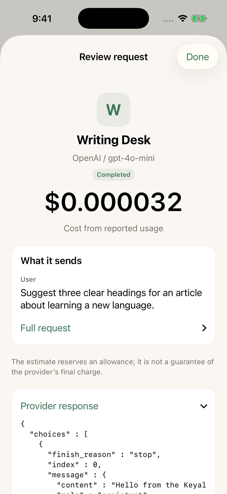

Bring your own AI key. Keep it to yourself.
AI apps need a model API key, and nobody knows who should provide it. With Keyala the app asks, you approve on your iPhone, and the call runs on your key. The app never sees it.
Free beta. iPhone app in invite-only TestFlight.
Paperplane
wants to use your OpenAI key
about $0.002 estimated
How it works
The app asks
The app sends its request to Keyala instead of the provider.
You approve
You see the exact prompt and estimated cost on your iPhone, then allow or deny.
It runs on your key
Keyala forwards the call with your key and returns the answer to the app.
See it in the app


Native app demo with a local mock provider.
For developers
- Change one line: the base URL. Official OpenAI and Anthropic SDKs work as they are.
- Pair users with one script tag: QR, link or code.
- Built-in dashboard: calls, cost, models, countries, busiest hours.
- No keys to store, no bill to carry. Free.
client = OpenAI(
base_url="https://app.keyala.io/v1/openai",
api_key=grant_token,
max_retries=0)Register your app (step by step)
Read the developer docsFor users
- See the exact prompt and the response, every time.
- You set the limit: ask each time, a number of calls, a budget, or trust.
- Your key stays in Keyala. Apps never get it.
- Revoke any app at any time.
Register your app
Every app registers once before it can connect users. It is free and takes about a minute in the console.
Sign in to the console
Open app.keyala.io/console and scan the code with the Keyala app, or use the web password you set in the app.
Create the app
Open My apps and fill in Create app. The name is what users see on their phone. A website also needs its allowed origin: the scheme and host only, like
https://you.github.io, nothttps://you.github.io/project/.Copy the two values
You get an App ID and an App secret. The secret is shown only once, so save it in a password manager right away.
Put the App ID in your code
A website passes it to
Keyala.connect({ app: "app_..." }). A server keeps the secret and uses it to start connections.
App ID public
Starts with app_. It names your app. Safe to put in web page code and in Git.
App secret private
Starts with keyala_app_. It proves you own the app: a server uses it to start connections, and it opens your usage report. Never put it in a web page, an iPhone app or Git. It never gives access to anyone's API key.
Questions
What happens if I do not register?
Your app cannot connect anyone. Every connection names a registered app, and the user's phone shows that name before they approve.
Why register in the console rather than with the API?
Apps created in the console belong to your account. You see their usage report (calls, cost, models, countries, busiest hours) whenever you sign in, and you can rotate a lost or leaked secret without the old one. An app made earlier with POST /v1/apps can be added under My apps with Add an existing app and its secret.
How do I know it worked?
The app is listed under My apps with its App ID. Then open your page and connect: Keyala's dialog shows a QR code (not an error), and the phone shows your app name, plus "from" your site for a website. After the first approved call, the app's numbers in the console go up.
The page says "this origin is not allowed for this app".
The page's origin is not one you registered. Compare the address bar's scheme and host with the app's allowed origins. Origins cannot be edited yet, so create a new app with the right one and use its App ID.
I lost the secret, or it leaked.
In My apps, open the app and choose Rotate secret. The old secret stops working at once. Users' connections keep working, since they never depended on the secret.
Do I need the secret for a website?
Not in the page. A website only needs the App ID and its allowed origin. Keep the secret for the usage report and for rotating it.
Trust, in plain words
Keys are never sharedKeys are encrypted at rest and never sent to developers. Only the last 4 characters are ever shown.
Your content is privatePrompts and responses are encrypted per user and deleted after 30 days.
You stay in chargeFirst connections always ask each time. Before a call you see an estimate; afterwards, the cost from the usage the provider reported.
Honest about the limitsKeyala is an experimental personal project. Its server decrypts your key to forward the calls you approve, so you are trusting its operator.
Stop asking who pays. Let people bring their own key.
Want the iPhone app? Write to support@keyala.io to join the invite-only TestFlight.